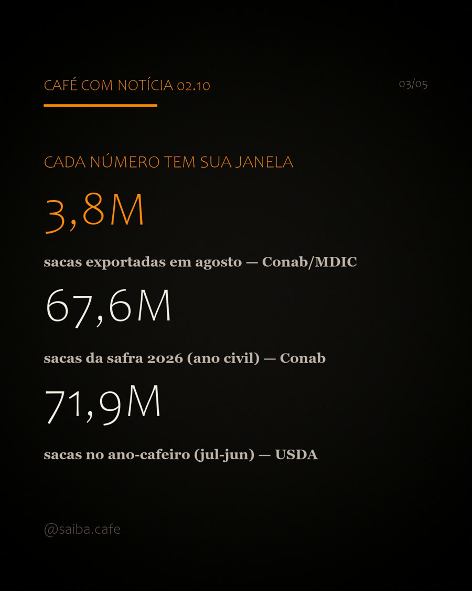
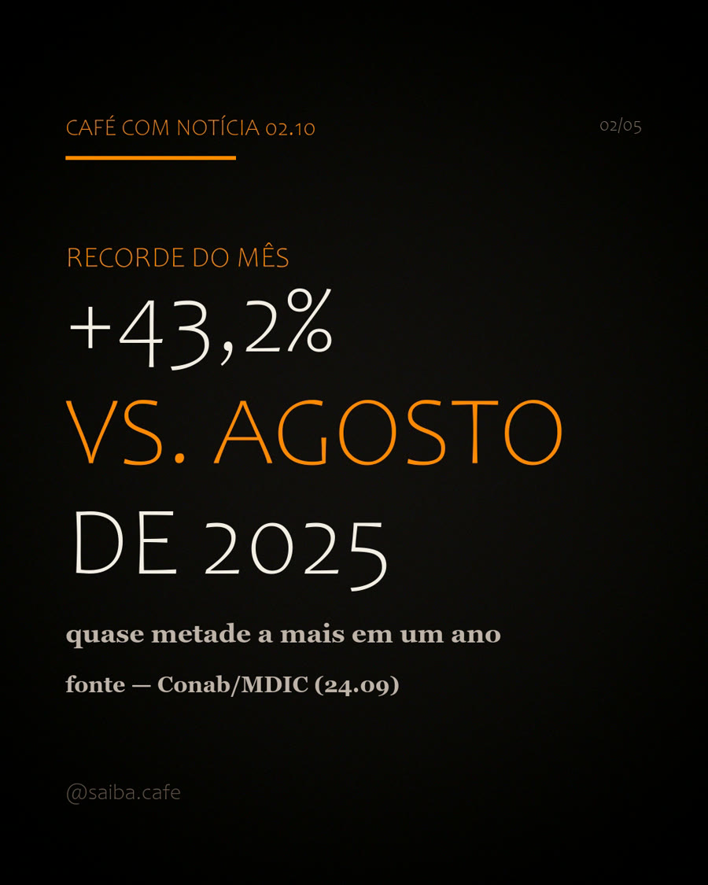

O número
Quem chutou alto no especial do Dia Internacional do Café acertou por cálculo. Em agosto de 2026, o Brasil exportou 3,8 milhões de sacas de 60 kg, a maior marca para um mês de agosto em toda a série histórica. São 43,2% mais que em agosto de 2025 e 25,8% mais que em julho. O dado é do Ministério do Desenvolvimento, Indústria, Comércio e Serviços (MDIC), compilado pela Conab em 24.09.
Em peso, 3,8 milhões de sacas de 60 kg dão 228 mil toneladas de café atravessando os portos num único mês. A multiplicação é conta da casa (3,8M × 60 kg); o número original vem da fonte citada abaixo.
3,8M
sacas de 60 kg exportadas em agosto de 2026, recorde do mês
+43,2%
sobre agosto de 2025
+25,8%
sobre julho de 2026
Cada número, sua janela
Três números grandes circulam por aí com relógios diferentes, e a confusão começa quando alguém tenta somá-los, compará-los ou emprestá-los entre si.
- 3,8M sacas: o que saiu dos portos em agosto (janela mensal; Conab/MDIC, 24.09).
- 67,6M sacas: a safra 2026 no ano civil (Conab, 3º Levantamento, 24.09). Recorde da série histórica, alta de 19,6%. O arábica responde por 48,2M (+34,8%); o conilon, por 19,4M (−6,6%).
- 71,9M sacas: o ano-cafeiro de julho de 2026 a junho de 2027, estimativa do USDA (jul/26). Recorde, cerca de 37,9% das 189,7M sacas do mundo.
Somar essas contas é como somar pontos de futebol com pontos de basquete: sai um número, não sai um resultado. Exportação é fluxo mensal; safra é colheita do ano civil; ano-cafeiro é a mesma safra vista pelo calendário agrícola. Cada fonte, sua janela, e a da casa não abre outra.

Por que agosto bateu recorde
Resposta curta: a safra recorde chegou ao porto. Quando a Conab fechou o 3º levantamento, em 24.09, 99% da área já estava colhida e a produção somou 67,6M de sacas, alta de 19,6% em ano de bienalidade positiva. O arábica, que responde por cerca de 70% da produção brasileira, cresceu 34,8%. Só Minas Gerais entregou 34,96M de sacas da variedade.
O detalhe que muda a leitura está no acumulado de janeiro a agosto: o Brasil embarcou 24,6 milhões de sacas, 6,6% a menos que no mesmo período de 2025 (MDIC). O recorde de agosto não apaga o ano difícil atrás. Ele é a fila de navios se desfazendo depois de uma safra menor em 2025 e de uma colheita que só agora atinge volume cheio.

Quem ganha, quem perde
Ganha
- Exportadoras e portos: fluxo recorde justamente no pico da movimentação da safra.
- Produtores com café em mãos: demanda ativa comprando o grão da safra 2026, que é a maior da série da Conab.
- Balança comercial: um mês desses enche de dólar a conta do agronegócio.
Perde (ou paga o preço)
- Torrefações menores: o mercado interno disputa o mesmo grão com quem paga em dólar.
- Consumidor: o preço do pacote sente a disputa antes de sentir o alívio da safra recorde.
- Quem apostou no "safra recorde = café barato" cedo demais: as cotações caem devagar, segundo a própria Conab.
Por que importa pra você
Se você bebe
A safra recorde deveria baratear seu café. A exportação recorde explica por que ele não barateia tão rápido: 3,8M de sacas num mês são grão saindo do país, e o mercado interno compete com quem paga em dólar. Segundo a própria Conab, as cotações internacionais seguem sob pressão de baixa com a safra brasileira entrando, mas sem reduções expressivas esperadas: os estoques estão baixos e o consumo mundial continua subindo.
Se você produz
Agosto premiou quem ainda tinha café guardado. A janela de venda da safra 2026 está aberta, mas o calendário de concorrência não perdoa quem espera demais. A nota da Conab aponta a colheita do Vietnã e o aumento sazonal da produção colombiana no último trimestre como os próximos grãos a chegar ao mercado. Quem pode esperar, espera; quem precisa vender, olha o câmbio.
Se você investe
O recorde de agosto é dado do passado. O risco vem pela frente: a Conab lista as previsões de El Niño no ciclo 2026/27 como fator que sustenta preços e pode afetar a produção em vários países. Com safra recorde já precificada e estoques baixos, o que move o preço daqui em diante é clima. E clima não entra em levantamento.
O que vem pela frente
No quadro mundial do USDA, a produção deve bater 189,7 milhões de sacas (+6,1%) e o consumo, 179,7 milhões (+3,6%) em 2026/27. Sobra grão no papel, mas com estoques baixos e El Niño rondando as lavouras a sobra não chega inteira ao desconto no balcão. Na prática, o café que você toma segue disputado, e o calendário agora é dos rivais: Vietnã e Colômbia entram no segundo semestre.
chuta aí: quantas pessoas no mundo vivem do café? a resposta saiu no café com notícia de 03.10: cerca de 12,5 milhões de famílias cafeeiras no mundo, segundo a ICO. compromisso do post, fechado.
Fontes
- Conab: nota oficial "Produção de café é estimada em 67,6 milhões de sacas, influenciada por bienalidade positiva em 2026" (3º Levantamento Safra 2026), 24.09.2026: safra 67,6M (+19,6%), arábica 48,2M (+34,8%), conilon 19,4M (−6,6%) e exportação de agosto (3,8M; +43,2% vs. ago/2025; +25,8% vs. jul; acumulado 24,6M, −6,6%), segundo o MDIC. gov.br/conab
- Conab: Boletim completo do 3º Levantamento de Café, Safra 2026, 24.09.2026. gov.br/conab/safras
- USDA FAS, Coffee: World Markets and Trade, jul/2026: Brasil 71,9M (recorde), produção mundial 189,7M (+6,1%), consumo 179,7M (+3,6%), participação do Brasil "nearly 40 percent". apps.fas.usda.gov (PDF)
- MDIC: Comex Stat, base oficial de comércio exterior usada pela Conab para os dados de exportação. comexstat.mdic.gov.br